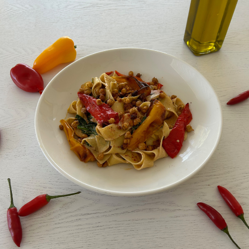

Food Technology
Culinary exploration focused on flavour balance, technique, and presentation — with an emphasis on creative problem-solving and real-world briefs.
2023 Flavour Forecast Challenge — Beyond Heat
Creamy VietCajun Pasta concept celebrating the “Beyond Heat” theme. The dish layers gentle chilli warmth with rich creaminess and Cajun aromatics, balanced by Vietnamese freshness (lime, herbs) and texture contrast. Project focus: flavour profiling, iterative tasting, plating, and documenting a competition-ready process suitable for senior Food Tech folios.
